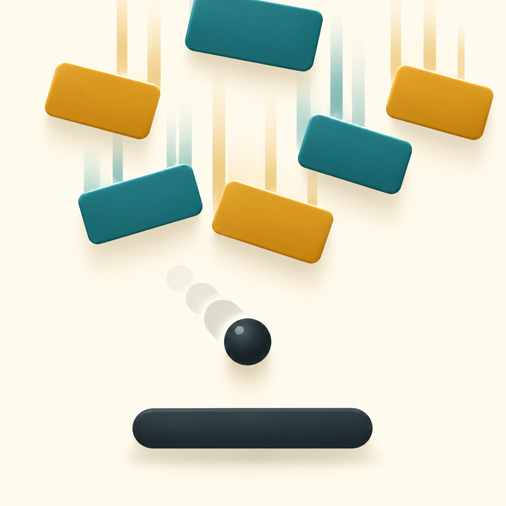

Find your
next best.
A little precision. A satisfying bounce. A new personal best to chase. Welcome to Brick Tempo.
Get support ↗
Hold & drag.
Hold the lower control area and drag left or right. Lift your finger to pause.
Make it count.
Use the edges of your paddle to direct the ball. Break incoming bricks before they reach the danger line.
Earn your look.
Hit star-marked bricks twice to earn a star. Unlock cosmetic ball, paddle and brick designs.
Support
The game pauses when I lift my finger.
That is intentional. Touch and hold the lower control area to continue. The pause button also opens the regular pause menu.
Where are my stars and unlocked designs saved?
Progress is stored on your device. There is no in-game account or cross-device sync. Deleting the app can remove progress; offloading and device backups are managed by iOS.
Do designs give me extra power?
No. They change appearance and effects. Your aim and timing determine the result.
How can I change sound, language or advertising choices?
Open Settings from the pause menu. Music, sound, haptics and Turkish/English options are available there. Advertising privacy options appear when required by the consent service.
Something else?
Email kadirkiras@pm.me. Include your iPhone model, iOS version, app version and what happened. Please do not send passwords or sensitive information.
Brick Tempo — Destek
Alt kontrol alanına basılı tut ve sağa–sola sürükle. Parmağını kaldırınca oyun durur; tekrar dokununca devam eder. Topun yönünü raketin farklı noktalarıyla belirle ve tuğlaları tehlike çizgisine ulaşmadan kır.
Yıldızlı tuğlalara iki kez vurarak yıldız kazanabilir, top, raket ve tuğla görünümlerini açabilirsin. Tasarımlar yalnızca görseldir; ek güç sağlamaz.
Kayıtlarım nerede?
Skor, yıldızlar ve açılan tasarımlar cihazında saklanır. Oyun içi hesap veya cihazlar arası senkronizasyon yoktur. Uygulamayı silmek ilerlemeyi silebilir; uygulamayı arşivleme ve cihaz yedekleri iOS tarafından yönetilir.
Ayarlar
Duraklatma menüsünden ayarları açarak müzik, ses, titreşim ve Türkçe/İngilizce seçeneklerini değiştirebilirsin. Reklam gizlilik seçenekleri, onay hizmeti gerektirdiğinde görünür.
İletişim
kadirkiras@pm.me adresine cihaz modelini, iOS ve uygulama sürümünü, karşılaştığın sorunu yazabilirsin. Şifre veya hassas bilgi gönderme.